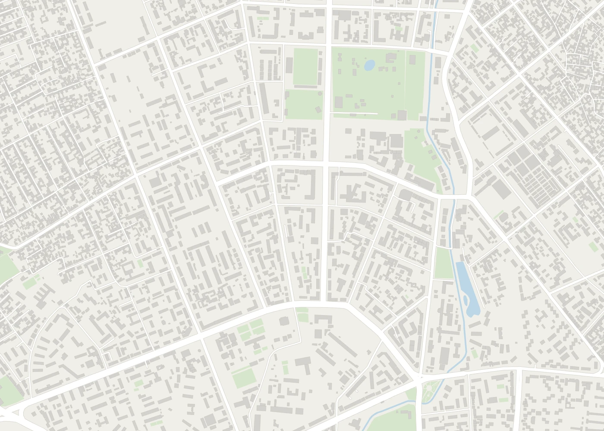
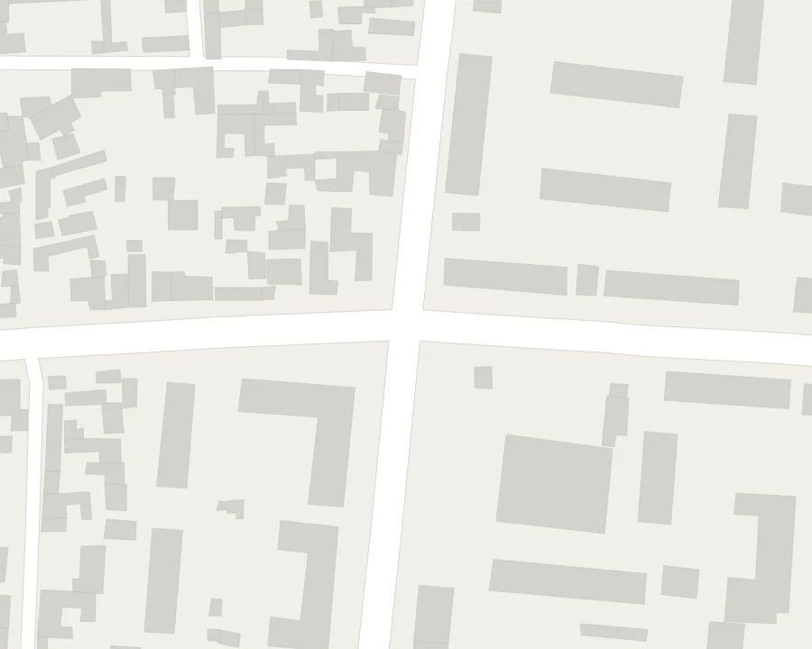
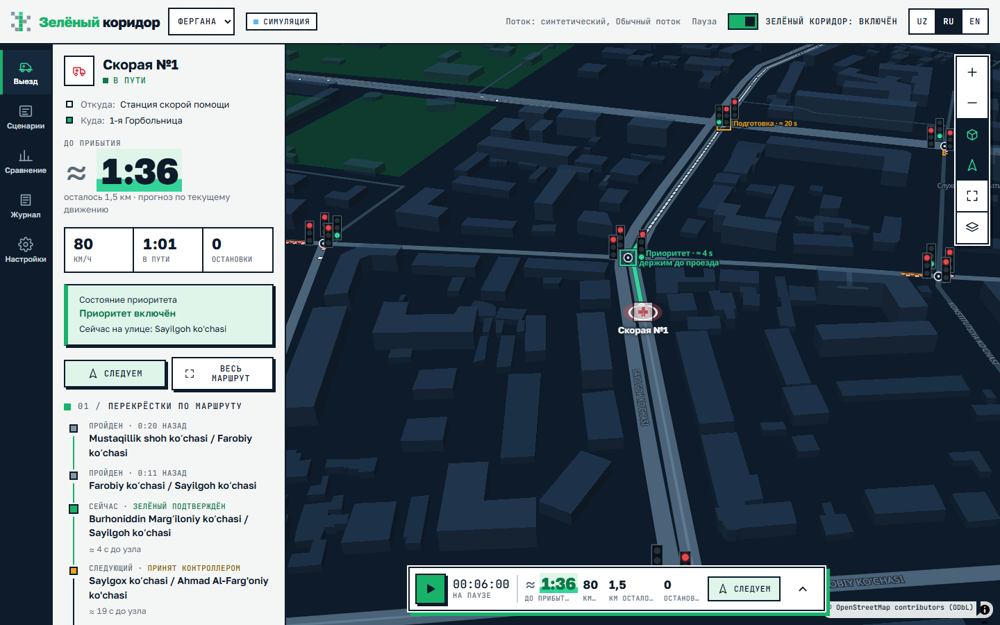
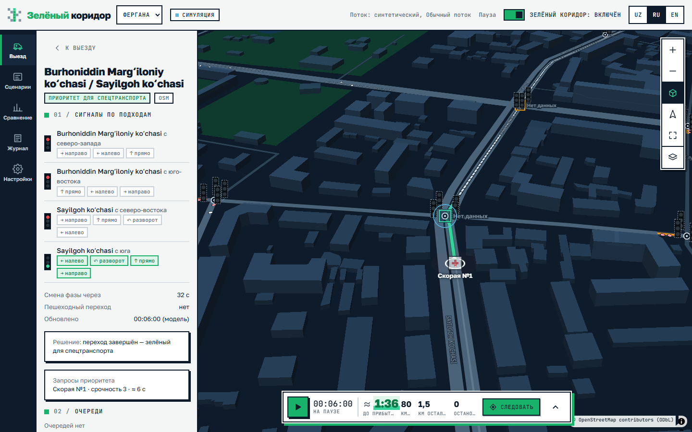
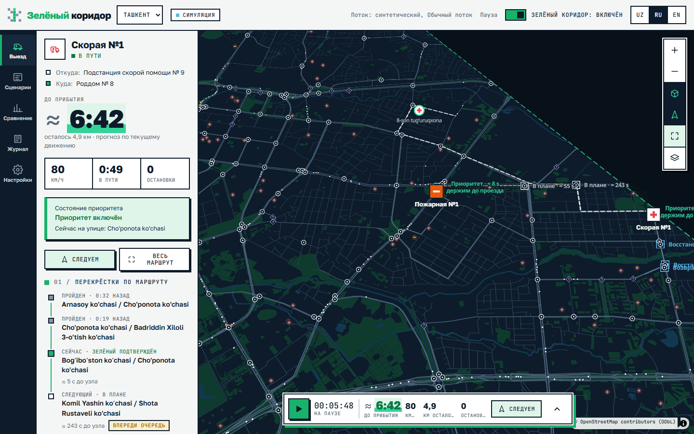
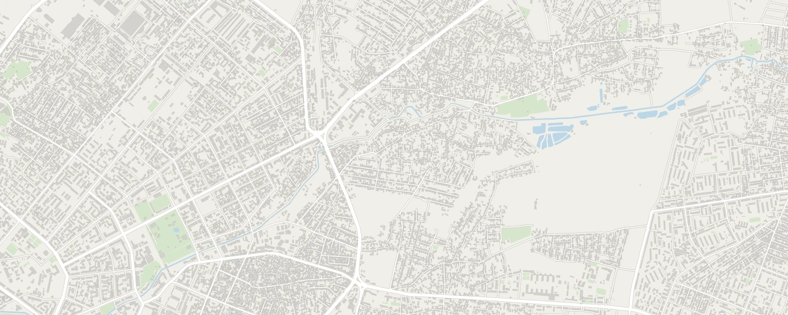

6,9 млн
вызовов приняла служба 103 за январь–июнь 2025 года — на 8,4 % больше, чем годом раньше.
Минздрав РУз · kun.uz«Зелёный коридор» — модуль для городского центра управления движением. Скорая, пожарные и полиция чаще всего застревают не из-за красного сигнала, а из-за машин, которые уже стоят перед ним и закрывают проезд. Система заранее переключает светофоры на маршруте: очередь уезжает до того, как подъедет экстренная машина, и она проходит перекрёсток по свободной полосе, не теряя манёвра. Проверено в модели на реальной дорожной сети Ферганы и Ташкента.

Фергана · СимуляцияС сиреной экстренная машина вправе ехать на красный. Но если перед перекрёстком уже стоят машины, а на узкой улице им некуда прижаться, проезд закрыт — и скорая стоит вместе со всеми. Пожарные и полиция застревают так же. Здесь теряются минуты, а въезд на перекрёсток поперёк потока — один из самых опасных моментов выезда.
вызовов приняла служба 103 за январь–июнь 2025 года — на 8,4 % больше, чем годом раньше.
Минздрав РУз · kun.uzшансов пережить остановку сердца — за каждую минуту ожидания помощи.
Исследование 2024 г., Нидерландыаварий скорых происходит у светофоров. У машин того же размера — 18 %.
Prehospital Emergency Care, 2023, СШАоткрытых замеров потока машин по Фергане. Поэтому модель честно работает с синтетикой и умеет принимать реальные замеры.
Наш обзор 18 источниковТашкент переходит на интеллектуальную транспортную систему. Координация экстренных служб входит в её задачи. Мы предлагаем готовый алгоритм приоритета, который можно встроить в эту систему.
Утверждён для Ташкента: адаптивные светофоры и координация экстренных служб, интеграция с регионами до 2030 года.
daryo.uzЦентр организации дорожного движения Ташкента меняет светофоры и оборудование под интеллектуальную транспортную систему.
AKIpressТак сработали 37 систем приоритета для экстренных машин в Пенсильвании (США).
US DOT ITS JPOБезопасные переходы фаз, возврат к программе, работа с двумя машинами. Проверено на реальных сетях Ферганы и Ташкента.
Система не включает весь маршрут сразу. Она смотрит на светофоры в пределах 1,5 км впереди, раз в секунду пересчитывает время прибытия и заранее даёт зелёный направлению экстренной машины — чтобы очередь перед ней, вместе с машинами, вливающимися с боковых улиц, успела уехать. Если выпущенная очередь не поместится до следующего светофора, следующий открывается раньше. Фазы меняются только безопасно.

По координатам скорой и адресу вызова система прокладывает маршрут и рассчитывает время прибытия к каждому светофору.
Светофор заранее даёт зелёный по маршруту. Очередь успевает уехать, и скорая проходит перекрёсток по свободной полосе.
Когда скорая покидает перекрёсток, приоритет снимается. После безопасной смены фазы зелёный получает поперечная улица.
Перекрёсток работает по своей программе. Скорая ещё дальше 1,5 км.
Наступил расчётный момент: перекрёсток получает запрос приоритета для одного конкретного направления.
Текущая фаза завершается полностью: минимальный зелёный, жёлтый, «все красные». Начатый пешеходный переход не обрывается.
Зелёный получает весь подход машины: очередь впереди уезжает, полоса свободна, у водителя остаётся место для манёвра. Держим, пока машина не покинет перекрёсток, но не дольше 60 секунд.
Первыми едут те, кто ждал дольше. Затем перекрёсток плавно возвращается в общий цикл.
старт = самое раннее прибытие − переключение − очередь − запас
Прибытие считается интервалом, а подготовка идёт по его раннему краю, чтобы скорая не догнала ещё стоящую очередь. Очередь — это машины впереди на маршруте плюс приток с боковых улиц по долям поворотов, которые меряют детекторы адаптивных светофоров. Координаты машины в модели приходят с ошибкой ±10 м и задержкой 2 с.
Если запросы приходят одновременно, первой едет машина с более высокой срочностью от диспетчера, затем — та, что приедет раньше. Если перекрёсток уже отдан одной машине, вторая ждёт её проезда, но не дольше 60 секунд: переключать фазу перед машиной, которая уже подъезжает, опаснее. Тип службы сам по себе ничего не решает.
Нет сигнала от машины 6 секунд — запрос снимается. Зелёный держится не дольше 60 секунд. Боковые улицы не ждут бесконечно.
Фазы строятся так, что пересекающиеся направления не получают зелёный вместе, а отдельный монитор следит за занятостью перекрёстка по траекториям машин. Это проверка модели, а не доказательство безопасности на улице: для пилота нужны реальные программы светофоров и испытания с настоящим контроллером.
3D-карта, панель выезда и карточка каждого перекрёстка. Работает в браузере на ноутбуке и телефоне, в том числе без интернета.



Маршруты выбраны случайно до получения результатов: 50 пар «откуда—куда» по магистралям Ферганы и 20 по Ташкенту, у каждой 2–3 прогона с разным потоком. Каждое сравнение — два прогона из одного и того же состояния. В обоих вариантах машина с сиреной вправе ехать на красный, а её координаты приходят с ошибкой ±10 м и задержкой 2 с.
Мы отделяем наблюдения от допущений — на этом сайте, в интерфейсе и в отчёте.
В Ташкенте адаптивные светофоры уже стоят на сотнях перекрёстков и управляются из единого центра. Мы их не заменяем: система отправляет центру запрос приоритета, а светофор сам проверяет его и выполняет по своей программе.
Вход — координаты бригады и срочность вызова от диспетчерской 103, 101 или 102. Выход — запрос приоритета с маршрутом и сроком действия через центральную систему (стандартные сообщения запроса и статуса, как в NTCIP 1211 и открытых системах USDOT, или API поставщика). Контроллер вправе отказать. Система различает пять фактов: запрос отправлен → принят контроллером → зелёный подтверждён сигналом → выезд свободен → машина проехала. Без подтверждения зелёный не считается включённым.
Тогда его модуль — исполнитель, а наш вклад — планирование по всему маршруту: какие светофоры и когда просить, как учесть очередь и приток с боковых улиц, как развести две машины и вернуть перекрёстки в программу.
Правила для машин со спецсигналами не меняются. Программами светофоров по-прежнему управляет центр организации движения, регламент согласуется с ГУБДД. Координаты бригад используются только во время выезда, в журналах остаются обезличенные события.
Теневой режим на 2–4 перекрёстках: система считает и пишет журнал, но не управляет. Критерии: ошибка прогноза прибытия, доля выездов, где коридор был бы готов вовремя, ожидание боковых направлений. Только после этого — активный режим на 1–2 узлах с заранее заданными правилами остановки.
Пилот начинается в режиме наблюдения: система считает и ведёт журнал, но не управляет светофорами, пока безопасность не доказана на данных.
Фергана и центр Ташкента, сравнение, журналы, 23 автоматические проверки, серия из 1210 прогонов, проверка в SUMO.
2–4 перекрёстка Ташкента, три пика в будний день, калибровка модели.
2–4 недели: прогнозы системы сравниваются с реальными маршрутами бригад 103.
Реальный приоритет вместе с ГУБДД: программы светофоров, протокол связи, регламент.
Откройте демо, выберите скорую, пожарную или полицию и смотрите, как перекрёстки впереди освобождаются к её подъезду. Работает в браузере и на телефоне.
